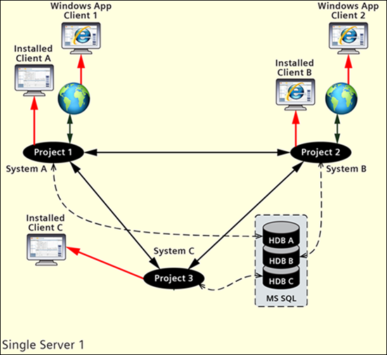

Fully Meshed Distributed Systems on a Single Server (Segmented Configuration)
You can set up a Fully Meshed Distributed System having multiple Local Systems (projects) hosted on a single server computer.
The projects in distribution on the same server can have different security configurations. For example, you can set the Stand-alone project in distribution with a Secured project and so on. When you want to use a local Desigo CC client for accessing the projects in distribution, it is recommended to configure the stand-alone projects in distribution. However, if you have an FEP on a remote server linked to one of the projects, you must configure the projects with secured communication in distribution.
In the Fully Meshed Distributed Systems on a single server, the SQL Server is usually on the same server as that of the projects. Typically, the SQL Server can have one SQL instance with multiple HDBs, where each HDB is linked to one project.
When you log onto the installed client or Windows App client of any of the Local System (project) using the Global user, you can work with the other linked distributed systems. You may also log onto the client of a linked FEP connected to one of the distributed systems and work with the other linked distributed systems.
Important Characteristics:
- All Local Systems (projects) are running on the single server. Therefore, when the server is down, all the connected Local Systems are also down. Therefore, all field devices connected to the server that is down, is not available from any Local System in distribution.
- This deployment is helpful where the distribution of the servers is not possible or useful, and you must overcome the size limitation of a single system.
Deployment Diagram
